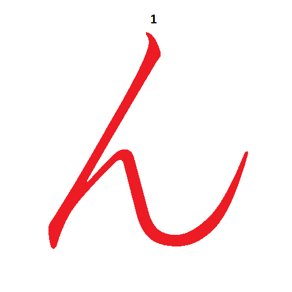

El caracter /ん/ (n) es un caracter especial, no aparece acompañado
por ningun sonido de vocal y nunca aparece solo.
No se pronuncia exactamente igual a nuestra "n" que articulamos
pegando la lengua contra el paladar, sino que se emite con la boca cerrada,
pegando la parte posterior de la lenga a la parte posterior del paladar.
Es parecida a la "m" pero pegando la lengua al paladar.
Volver